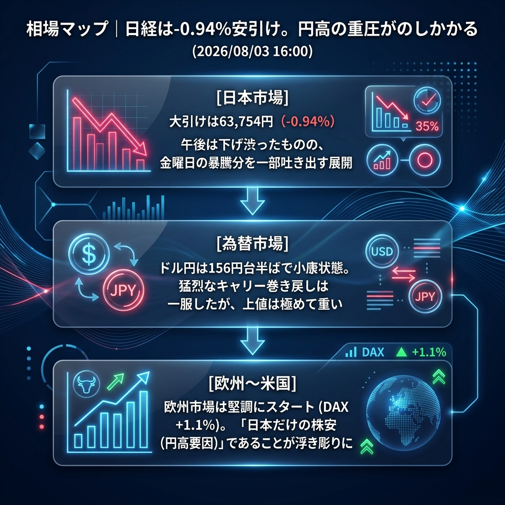

先週末の「歴史的暴騰」から一転、本日の日経平均は「円高の恐怖」に屈する形で前日比-0.94%（63,754.90円）の反落で大引けを迎えました。
とはいえ、朝方のパニック的な売り（一時63,200円台まで下落）からは午後に向けて下げ渋っており、156円台という強烈な円高水準を考慮すれば「意外と底堅かった」とも評価できる1日でした。一方で、オープンした欧州市場（DAX等）は上昇してスタートしており、「株安になっているのは円高に苦しむ日本だけ」という構図が明確になっています。
「日本株の独歩安（円高要因）」と「下げ渋った日経平均の底堅さ」。
午後に入ると、ドル円は156円台半ば（156.60円付近）で下げ止まり、一旦の小康状態となりました。これに伴い、日経平均もパニック売りが収まり、ジリジリと下値を切り上げる展開となりました。米国株先物（ナスダック）は引き続き堅調（+0.6%超）を維持しており、グローバルな「リスクオフ（総悲観）」には至っていません。
| 指数・銘柄 | 現在値 | 前回比（前日比） | 騰落率 | 確認事項 |
|---|---|---|---|---|
| S&P 500 (ES=F) | 7,555.25 | +36.00 | +0.48% | 時間外で手堅い推移 |
| Nasdaq (NQ=F) | 28,586.75 | +182.50 | +0.64% | ハイテク株買い意欲継続 |
| Dow (YM=F) | 52,862.0 | +227.0 | +0.43% | 堅調 |
| 日経225現物 | 63,754.90 | -607.12 | -0.94% | 【大引け】円高嫌気で反落 |
| CME日経225先物 | 63,635.0 | +365.0 | +0.58% | 欧州時間入りでやや重い |
| USD/JPY | 156.610 | -0.790 | -0.50% | 156円台中盤で小康状態 |
| EUR/USD | 1.1531 | +0.0004 | +0.03% | 高値圏で横ばい |
| 金 | 4,110.5 | +3.5 | +0.09% | 高値揉み合い |
| 原油 | 80.16 | -4.51 | -5.33% | 80ドル割れから反発 |
| BTCUSD | 62,561.97 | -935.27 | -1.47% | 上値重い |
今夜は米国のISM製造業景況指数の発表が控えています。原油価格が暴落している中で、このISMが「予想外に悪い（景気減速）」結果となれば、米国市場でも「リセッション懸念」が広がり、ナスダックをはじめとする米国株が急落するリスクがあります。欧州勢はそれを見極めるまで、小動きを続ける可能性があります。
今夜の米国ISM製造業景況指数が「予想を大きく下回る悪化」を示した場合。米国市場でついに「景気後退（ハードランディング）」が意識され、堅調だったナスダックが急落。リスクオフの円高が再燃（155円台へ突入）し、日本株先物が62,000円割れへと連れ安する「世界同時株安」のシナリオとなります。